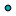

<!doctype html>
<html lang="en">
    <head>
        <meta charset="utf-8">
        <meta http-equiv="X-UA-Compatible" content="IE=edge">
        <meta name="viewport" content="initial-scale=1,user-scalable=no,maximum-scale=1,width=device-width">
        <meta name="mobile-web-app-capable" content="yes">
        <meta name="apple-mobile-web-app-capable" content="yes">
        <link rel="stylesheet" href="css/leaflet.css" />
        <link rel="stylesheet" type="text/css" href="css/qgis2web.css">
        <link rel="stylesheet" href="css/MarkerCluster.css" />
        <link rel="stylesheet" href="css/MarkerCluster.Default.css" />
        <link rel="stylesheet" href="css/leaflet-search.css" />
        <link rel="stylesheet" href="css/leaflet.draw.css" />
        <link rel="stylesheet" href="css/leaflet.measurecontrol.css" />
        <style>
        html, body, #map {
            width: 100%;
            height: 100%;
            padding: 0;
            margin: 0;
        }
        </style>
        <title></title>
    </head>
    <body>
        <div id="map">
        </div>
        <script src="js/qgis2web_expressions.js"></script>
        <script src="js/leaflet.js"></script>
        <script src="js/leaflet-heat.js"></script>
        <script src="js/leaflet.rotatedMarker.js"></script>
        <script src="js/OSMBuildings-Leaflet.js"></script>
        <script src="js/leaflet-hash.js"></script>
        <script src="js/Autolinker.min.js"></script>
        <script src="js/leaflet.draw.js"></script>
        <script src="js/leaflet.measurecontrol.js"></script>
        <script src="js/leaflet.markercluster.js"></script>
        <script src="js/leaflet-search.js"></script>
        <script src="data/rioOGRGeoJSONPoint0.js"></script>
        <script>
        L.ImageOverlay.include({
            getBounds: function () {
                return this._bounds;
            }
        });
        var map = L.map('map', {
            measureControl:true,
            zoomControl:true, maxZoom:28, minZoom:6
        }).fitBounds([[-22.9072926759,-43.1850469096],[-22.9012968626,-43.1747742574]]);
        var hash = new L.Hash(map);
        map.attributionControl.addAttribution('<a href="https://github.com/tomchadwin/qgis2web" target="_blank">qgis2web</a>');
        var feature_group = new L.featureGroup([]);
        var bounds_group = new L.featureGroup([]);
        var raster_group = new L.LayerGroup([]);
        var basemap0 = L.tileLayer('http://{s}.tile.openstreetmap.org/{z}/{x}/{y}.png', {
            attribution: '&copy; <a href="http://openstreetmap.org">OpenStreetMap</a> contributors,<a href="http://creativecommons.org/licenses/by-sa/2.0/">CC-BY-SA</a>',
            maxZoom: 28
        });
        basemap0.addTo(map);
        var basemap1 = L.tileLayer('http://a.tile.stamen.com/terrain/{z}/{x}/{y}.png', {
            attribution: 'Map tiles by <a href="http://stamen.com">Stamen Design</a>,<a href="http://creativecommons.org/licenses/by/3.0">CC BY 3.0</a> &mdash;Map data: &copy; <a href="http://openstreetmap.org">OpenStreetMap</a>contributors,<a href="http://creativecommons.org/licenses/by-sa/2.0/">CC-BY-SA</a>',
            maxZoom: 28
        });
        basemap1.addTo(map);
        function setBounds() {
        }
        function geoJson2heat(geojson, weight) {
          return geojson.features.map(function(feature) {
            return [
              feature.geometry.coordinates[1],
              feature.geometry.coordinates[0],
              feature.properties[weight]
            ];
          });
        }
        function pop_rioOGRGeoJSONPoint0(feature, layer) {
            var popupContent = '<table>\
                    <tr>\
                        <th scope="row">id</th>\
                        <td>' + (feature.properties['id'] !== null ? Autolinker.link(String(feature.properties['id'])) : '') + '</td>\
                    </tr>\
                    <tr>\
                        <td colspan="2">' + (feature.properties['x'] !== null ? Autolinker.link(String(feature.properties['x'])) : '') + '</td>\
                    </tr>\
                    <tr>\
                        <td colspan="2">' + (feature.properties['y'] !== null ? Autolinker.link(String(feature.properties['y'])) : '') + '</td>\
                    </tr>\
                    <tr>\
                        <td colspan="2"><strong>name_of_bu</strong><br />' + (feature.properties['name_of_bu'] !== null ? Autolinker.link(String(feature.properties['name_of_bu'])) : '') + '</td>\
                    </tr>\
                    <tr>\
                        <th scope="row">proprietor</th>\
                        <td>' + (feature.properties['proprietor'] !== null ? Autolinker.link(String(feature.properties['proprietor'])) : '') + '</td>\
                    </tr>\
                    <tr>\
                        <th scope="row">address</th>\
                        <td>' + (feature.properties['address'] !== null ? Autolinker.link(String(feature.properties['address'])) : '') + '</td>\
                    </tr>\
                    <tr>\
                        <th scope="row">type</th>\
                        <td>' + (feature.properties['type'] !== null ? Autolinker.link(String(feature.properties['type'])) : '') + '</td>\
                    </tr>\
                    <tr>\
                        <td colspan="2">' + (feature.properties['notes'] !== null ? Autolinker.link(String(feature.properties['notes'])) : '') + '</td>\
                    </tr>\
                    <tr>\
                        <td colspan="2">' + (feature.properties['official_c'] !== null ? Autolinker.link(String(feature.properties['official_c'])) : '') + '</td>\
                    </tr>\
                    <tr>\
                        <td colspan="2">' + (feature.properties['modern_cit'] !== null ? Autolinker.link(String(feature.properties['modern_cit'])) : '') + '</td>\
                    </tr>\
                    <tr>\
                        <td colspan="2">' + (feature.properties['web_addres'] !== null ? Autolinker.link(String(feature.properties['web_addres'])) : '') + '</td>\
                    </tr>\
                    <tr>\
                        <td colspan="2">' + (feature.properties['year'] !== null ? Autolinker.link(String(feature.properties['year'])) : '') + '</td>\
                    </tr>\
                    <tr>\
                        <td colspan="2">' + (feature.properties['page_numbe'] !== null ? Autolinker.link(String(feature.properties['page_numbe'])) : '') + '</td>\
                    </tr>\
                </table>';
            layer.bindPopup(popupContent);
        }

        function style_rioOGRGeoJSONPoint0() {
            return {
                pane: 'pane_rioOGRGeoJSONPoint0',
                radius: 4.0,
                opacity: 1,
                color: 'rgba(0,0,0,1.0)',
                dashArray: '',
                lineCap: 'butt',
                lineJoin: 'miter',
                weight: 1,
                fillOpacity: 1,
                fillColor: 'rgba(23,165,178,1.0)',
            }
        }
        map.createPane('pane_rioOGRGeoJSONPoint0');
        map.getPane('pane_rioOGRGeoJSONPoint0').style.zIndex = 600;
        map.getPane('pane_rioOGRGeoJSONPoint0').style['mix-blend-mode'] = 'normal';
        var layer_rioOGRGeoJSONPoint0 = new L.geoJson(json_rioOGRGeoJSONPoint0, {
            pane: 'pane_rioOGRGeoJSONPoint0',
            onEachFeature: pop_rioOGRGeoJSONPoint0,
            pointToLayer: function (feature, latlng) {
                var context = {
                    feature: feature,
                    variables: {}
                };
                return L.circleMarker(latlng, style_rioOGRGeoJSONPoint0(feature))
            }
        });
        bounds_group.addLayer(layer_rioOGRGeoJSONPoint0);
        feature_group.addLayer(layer_rioOGRGeoJSONPoint0);
        raster_group.addTo(map);
        feature_group.addTo(map);
        var baseMaps = {'OSM': basemap0, 'Stamen Terrain': basemap1};
        L.control.layers(baseMaps,{' rio OGRGeoJSON Point': layer_rioOGRGeoJSONPoint0,},{collapsed:false}).addTo(map);
        setBounds();
        map.addControl(new L.Control.Search({
            layer: feature_group,
            initial: false,
            hideMarkerOnCollapse: true,
            propertyName: 'type'}));
        </script>
    </body>
</html>
